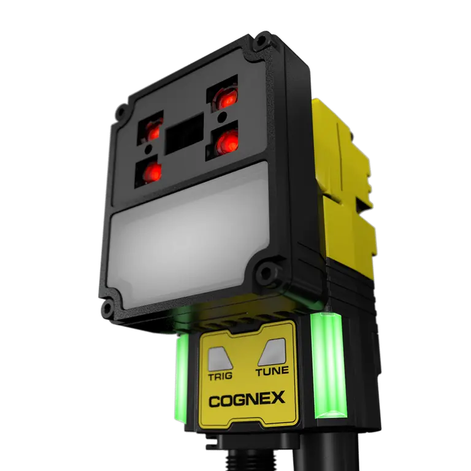

AI 지원 코드 판독
손상, 왜곡과 품질 편차가 있는 코드의 판독 안정성을 높이도록 설계된 제품입니다.
Fixed Barcode Reader · AI
일반 라벨부터 난이도 높은 1D·2D·DPM 코드까지 폭넓게 대응하는 AI 기반 고정식 바코드 리더기입니다.

01 · Overview
DataMan 290은 제조와 물류 공정의 고정식 코드 판독을 자동화할 때 범용적으로 검토할 수 있는 제품입니다. 코드 품질, 인쇄 방식, 이동 속도가 달라지는 환경에서 판독 안정성을 확보하도록 렌즈, 내장·외부 조명, 트리거와 통신 조건을 함께 선정합니다.
자동차 부품, 전자, 의료기기, 식품·포장, 물류 이송처럼 부품과 포장의 일련번호를 생산 이력과 연결하는 공정에 적합합니다.
02 · Key Features
손상, 왜곡과 품질 편차가 있는 코드의 판독 안정성을 높이도록 설계된 제품입니다.
인쇄 라벨과 직접 부품 마킹 등 서로 다른 코드 조건을 한 공정에서 검토합니다.
현장 설치, 초점·조명 조정과 판독 상태 확인을 쉽게 유지하도록 구성합니다.
03 · Application Fit
제품이 일정 위치를 통과할 때 자동으로 코드를 읽는 공정입니다.
금속이나 플라스틱에 직접 마킹된 코드로 부품 이력을 관리합니다.
판독 문자열과 공정 결과를 설비 제어 및 생산 이력 시스템에 전달합니다.
04 · Specification Guide
제품 선정에 앞서 아래 항목을 기준으로 검사 조건과 옵션을 확인합니다.
AI 기반 고정식 산업용 바코드 리더기
1D·2D 인쇄 코드와 직접 부품 마킹 코드
코드 크기·품질, 판독 거리, 이동 속도, 조명, 통신 방식
적용 모델 및 옵션에 따라 상이합니다. 해상도, 렌즈, 조명, 통신과 세부 사양은 검사 대상 및 설치 조건을 확인한 뒤 문의 바랍니다.
05 · Inspection Tasks
06 · ASPEC Engineering
단품 공급만이 아니라 실제 생산라인에서 안정적으로 작동하도록 광학계, 제어와 소프트웨어를 함께 구성합니다.
07 · References & Related Products
ASPEC의 AI·OCR·바코드·정렬 검사 사례에서 검사 방식과 시스템 구성 방향을 확인할 수 있습니다. 공개 사례는 특정 제품 모델 사용을 의미하지 않으며 실제 모델은 현장 조건에 따라 선정합니다. 구축사례 라이브러리 보기
08 · FAQ
DPM 판독을 검토할 수 있지만 마킹 방식, 표면 거칠기, 코드 크기와 조명이 성능을 좌우합니다. 실제 양품·불량 마킹 샘플로 판독 테스트를 권장합니다.
이동 속도, 노출 시간, 코드 크기와 조명 광량을 함께 맞춰야 합니다. 컨베이어 속도와 트리거 위치를 기준으로 설치 조건을 검토합니다.
리더기 또는 PLC·중계 프로그램을 통해 문자열과 판독 결과를 MES에 전달할 수 있습니다. 기존 통신 규격과 데이터 형식을 먼저 확인합니다.
09 · Project Inquiry
검사 대상, FOV, WD, 택타임, 불량 유형을 알려주시면 카메라·렌즈·조명과 시스템 구성을 함께 검토해드립니다.